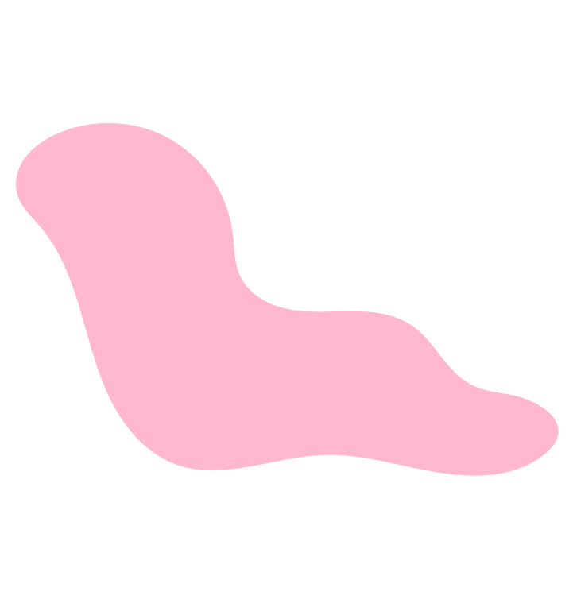
Understanding Your Skin–Mind Connection
Credits: Michelle Leung BScN; Kevin Li BSc MSPH
Dr. Marlene Dytoc MD PhD FRCPC
Designed by: Danting Zheng BSc Undergraduate
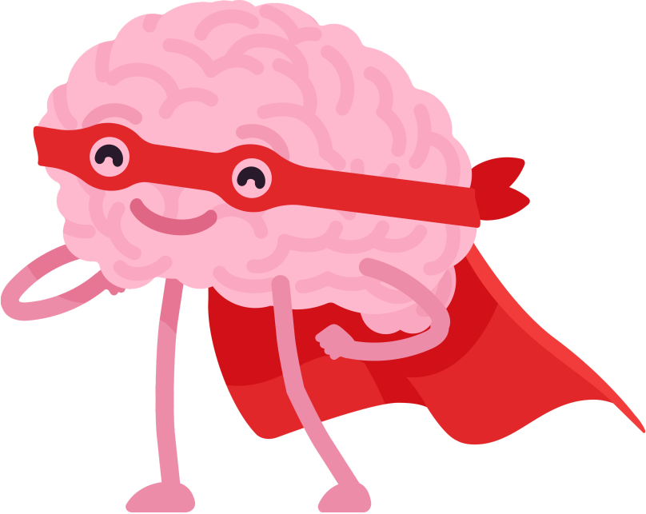
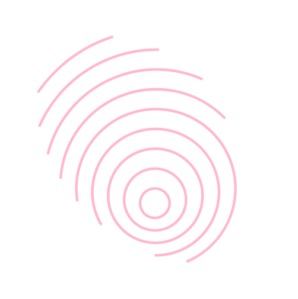
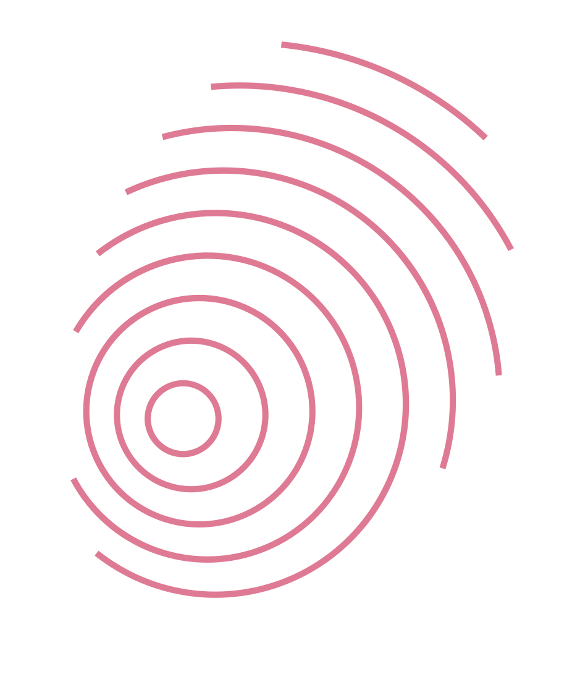
What We'll Explore Together
By the end of this module, you'll be able to:
Module outline
- 01What is Eczema (Atopic Dermatitis)? A Quick Refresher
- 02The Skin-Mind Link: Introducing Psychodermatology
- 03Stress and Your Eczema: A Closer Look
- 04How Stress Can Intensify Eczema
- 05How Does Stress Make Eczema Worse?
- a) On Your Daily Life & Emotional Well-being
- 06Partnering with Your Dermatologist
- 07Key Takeaways
Our Journey Today!
When you've completed this module, please click the link on the ‘Congratulations’ slide at the end of this presentation to confirm your completion!
What is Eczema (Atopic Dermatitis)?
Atopic dermatitis (AD) is a common chronic inflammatory skin disease. It's a complex genetic disease with environmental influences.
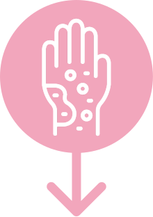
Characterised by intense itchiness and inflammation.
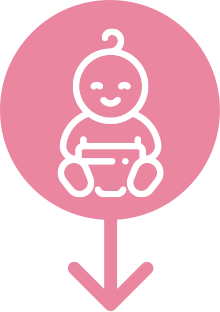
Typically begins during infancy or early childhood (early onset), but can also occasionally first develop in adulthood (late onset).
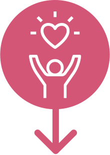
Can have profound and adverse impacts on the quality of life.
The Skin–Mind Link: Introducing Psychodermatology
Stress and Your Eczema: A Closer Look
For many adults, stress is a primary trigger or a major factor that worsens eczema flare-ups.
Stressors can be varied: work pressures, relationship challenges, financial worries, significant life changes, or even the daily burden of managing a chronic condition.
How Does Stress Make Eczema Worse?
(The Science, Simplified!)
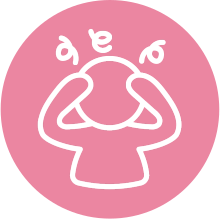
Stress
Your brain activates the "fight or flight" response, releasing stress hormones like cortisol and adrenaline.
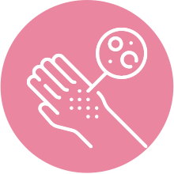
↓ Skin Barrier Integrity
Weakens your skin's protective barrier, making it more vulnerable to irritants and moisture loss.
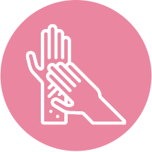
↑ Itching, Scratching & Skin Pain
Stir up the immune system (allergic-type inflammation), leading to more itching, scratching, and skin pain.
Want to Go Deeper?
The science behind stress and eczema — for the curious.
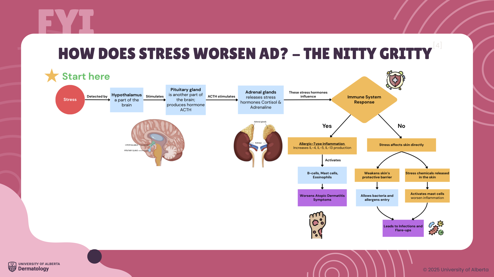
The Wider Impact of Eczema on Your Life
Eczema's reach extends beyond your skin. It can affect:
Sleep Quality
Nighttime itch is common, leading to disrupted sleep, fatigue, and reduced daytime functioning.
Emotional Well-being
Living with chronic itch and visible skin changes can lead to frustration, anxiety, and low mood.
Daily Activities & Social Life
You might avoid certain activities, clothing, or social situations due to discomfort or concerns about your skin's appearance.
Work/Study Performance
Discomfort, lack of sleep, and emotional distress can impact concentration and productivity.
Eczema and Your Mental Well-being
It's well-documented that adults with eczema have a higher likelihood of experiencing anxiety and/or depression compared to those without eczema.
This isn't a sign of weakness — it's an understandable consequence of managing a chronic, often challenging condition.
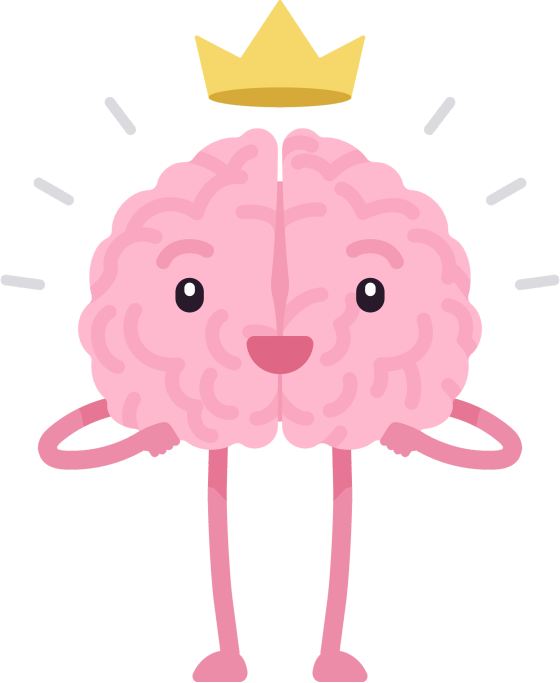
Partnering with Your Dermatologist
Your dermatologist can be a key ally in managing the broader impacts of your eczema. Don't hesitate to:
- Discuss the Full Impact: Share how eczema affects your sleep, mood, work, and daily life — not just the physical symptoms.
- Ask About the Skin-Mind Aspect: Inquire about strategies or resources your care team recommends for managing stress-related flares.
- Seek Referrals: If you're struggling emotionally, ask if they can refer you to mental health professionals or support groups familiar with chronic skin conditions.
- Collaborate on Your Treatment Plan: Work together to find a plan that addresses your skin while also fitting into your daily life.
Thinking it Through
Question 1 of 5Thinking it Through
Question 2 of 5Thinking it Through
Question 3 of 5Thinking it Through
Question 4 of 5Thinking it Through
Question 5 of 5Let's Recap! Key Takeaways
- › Your skin and mind are deeply connected; stress and emotions can significantly influence your eczema.
- › Recognising stress as a trigger is a crucial step in managing flare-ups.
- › Eczema's impact goes beyond the skin — affecting sleep, mood, and daily life. These are valid concerns.
- › Partner with your dermatologist to address both the physical and emotional aspects of your eczema.
This module is for general education and is not a substitute for medical advice from your doctor or dermatologist. In a crisis or if you are thinking about harming yourself, call 911, or the AHS Mental Health Helpline at 1-877-303-2642.
Sources
- Bolognia JL, Schaffer JV, Cerroni L. Dermatology. 5th ed. Elsevier; 2021:210.
- Koo J, Lebwohl A. Psychodermatology: the mind and skin connection. Am Fam Physician. 2001;64(11):1873-1879.
- National Eczema Society. Eczema Unmasked Report. 2020.
- Arndt J, Smith N, Tausk F. Stress and atopic dermatitis. Curr Allergy Asthma Rep. 2008;8(4):312-317.
- Nakagawa Y, Yamada S. Alterations in Brain Neural Network and Stress System in Atopic Dermatitis. J Pharmacol Exp Ther. 2023;385(2):78-87.
- Silverberg JI, et al. Patient burden and quality of life in atopic dermatitis in US adults. Ann Allergy Asthma Immunol. 2018;121(3):340-347.
- Ring J, et al. Atopic eczema: burden of disease and individual suffering. J Eur Acad Dermatol Venereol. 2019;33(7):1331-1340.
- Strom MA, et al. Association between atopic dermatitis and ADHD. Br J Dermatol. 2016;175(5):920-929.
- Silverberg JI, et al. Symptoms and diagnosis of anxiety and depression in atopic dermatitis. Br J Dermatol. 2019;181(3):554-565.
- Cheng BT, Silverberg JI. Depression and psychological distress in US adults with atopic dermatitis. Ann Allergy Asthma Immunol. 2019;123(2):179-185.
- Sandhu JK, et al. Association Between Atopic Dermatitis and Suicidality. JAMA Dermatol. 2019;155(2):178-187.
- Christensen RE, Jafferany M. Psychiatric and psychologic aspects of chronic skin diseases. Clin Dermatol. 2023;41(1):75-81.